Pillar 5 Hub
顔診断で高スコアを出す自撮り写真の撮り方｜ライティング・角度・表情まで完全ガイド【2026年版】
同じ顔でも写真によってスコアが10点から20点近く動くことがあります。理由はシンプルで、AIは「あなたそのもの」を見ているのではなく、1枚の写真に入ってきた光、角度、輪郭、表情、解像度を読んでいるからです。だから結果を安定させたければ、顔を変える前に写真条件を整えるほうが圧倒的に効率的です。
このPillar 5では、ライティング、カメラ角度、表情、背景、画質、フィルター、アクセサリー、メイクの8要素を順番に整理しながら、読んで試して戻ってくる行動ループを作ります。狙いは「AIをだますこと」ではなく、「AIがあなたの写真を正確に読める条件をそろえること」です。
明暗差が整うだけでランドマーク精度が上がり、左右差や肌の見え方まで一気に安定します。
5度から10度の傾きや近距離広角だけでも、対称性スコアと比率の見え方が変わります。
読んで試す、少し直して再診断、差を見てまた戻る。この往復が Pillar 5 最大の価値です。
今の写真でまず診断してみる → ベースラインを確認
最初の1枚は、改善前の基準値を知るために使います。ここで重要なのは高得点を狙うことより、いまの光、角度、表情でどのくらい安定して読まれるかを知ることです。
基準写真をアップロードして診断
JPEG, PNG, WEBP対応
AIが解析中...
顔ランドマークと笑顔強度を確認しています
総合判定
年齢
性別
感情
シンメトリー
笑顔
写真がスコアに与える影響：なぜ写真で差が出るのか？
顔診断AIが見ているのは、現実のあなたではなく、写真の中に残ったピクセル情報です。だから、同じ顔でも照明が暗い、カメラが少し傾く、背景がうるさい、画像がぼやけるだけで、AIが置くランドマークの位置は変わります。人間なら「今日は光が悪い」と補正できますが、モデルはそのまま情報として受け取るため、写真条件がスコアに直結します。
とくに対称性スコアは角度に敏感です。たとえ5度程度の傾きでも、片目の見え方、頬の幅、鼻先の位置関係がわずかに変わり、左右差として計算されることがあります。さらに照明が片側に寄ると、顔の片側だけ輪郭線が沈み、目の下や鼻横の影が深くなって、左右差が実際以上に大きく見えます。これは顔が悪いのではなく、AIが「そこに影がある」と読んでいるだけです。
解像度も土台です。顔が小さすぎる、スクリーンショットで再圧縮されている、手ブレやピンボケがあると、AIは目頭、鼻翼、口角、顎先の細かな境界を安定して追えません。結果として年齢や感情だけでなく、総合スコアまで揺れやすくなります。つまり顔診断の精度を上げる近道は、まず写真条件を揃えて、AIに読みやすい入力を渡すことです。
低い数値が出たときに最初に疑うべきなのは、光、角度、背景、画質です。顔そのものを否定する前に、まず同条件で撮り直して差を見る。これがPillar 5の出発点です。
このページでは、ライティングを最大30%、角度を約25%、表情を約15%から20%、背景と画質を各10%前後、フィルターとアクセサリーは条件次第で変動幅が大きい要素として整理します。もちろん数値は教育用の目安ですが、改善の優先順位を決めるには十分です。全部を少しずつ変えるより、まず光、次に角度、その次に表情という順で直すほうが短時間で結果は安定します。
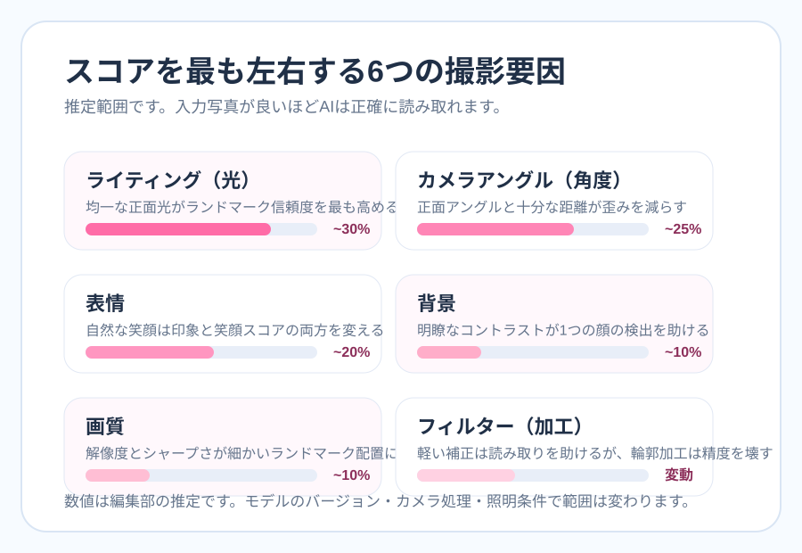
光は輪郭と目元の境界を整え、AIが特徴点を置く精度を底上げします。逆光や真上の光は最初に疑うべき原因です。
見上げ、見下ろし、近すぎる広角は鼻幅やフェイスラインを動かします。少し離した正面寄りが基準です。
笑顔は魅力評価にも、感情分類にも効きます。ただし大きく口を開けると唇のランドマークが不安定になることがあります。
他人の顔や強い模様があると、顔検出ボックス自体がぶれることがあります。比較時は背景を固定すると差が読みやすくなります。
ブレ、ノイズ、低解像度はすべての要素を一段ずつ悪化させます。顔が小さすぎる写真は論外です。
明るさの微調整は役立つ一方、輪郭補正や強い美肌処理は比率と質感を変えます。比較用途では慎重に扱うべきです。
メガネ、帽子、前髪、マスクは目元や輪郭の特徴点を隠し、比較の精度を下げることがあります。
ナチュラルメイクは見え方を整えることがありますが、輪郭を作り替える強いメイクは比率比較と相性が良くありません。
同じ顔でも写真条件でどう動くか — 実測サンプル
ここでは、1枚のライセンス済みポートレートを基準にして、同じ顔のまま写真条件だけを変えたローカル検証例を載せています。使ったのは Unsplash のポートレート1枚で、そこから暗い照明、片側シャドウ、角度ずれ、顔が小さい条件をこちらで作成し、実際にこのページのブラウザ版アナライザーで測定しました。つまり「同じ人でも写真条件でどう動くか」を、架空ではなく実際のローカル出力で見られるようにしたモジュールです。
今回のテストでは被写体の笑顔が一定だったため、笑顔スコアはすべて 100.0% のままでした。一方で、左右対称性は 68.6% から 65.8% まで落ち、顔が小さい条件では総合スコアも 78.0 から 76.6 へ下がっています。このブラウザ版モデルは笑顔比重が大きいので差は控えめですが、それでも「顔そのもの」ではなく「写真条件」で数値が動くことは確認できます。なお、角度ずれ版のローカル比較素材 u-angled.jpg も同じテストセットに含めており、角度セクションで見比べるための補助例として使えます。
明るい正面光、顔が大きい、自然な笑顔。総合 78.0 / 対称性 68.6%。
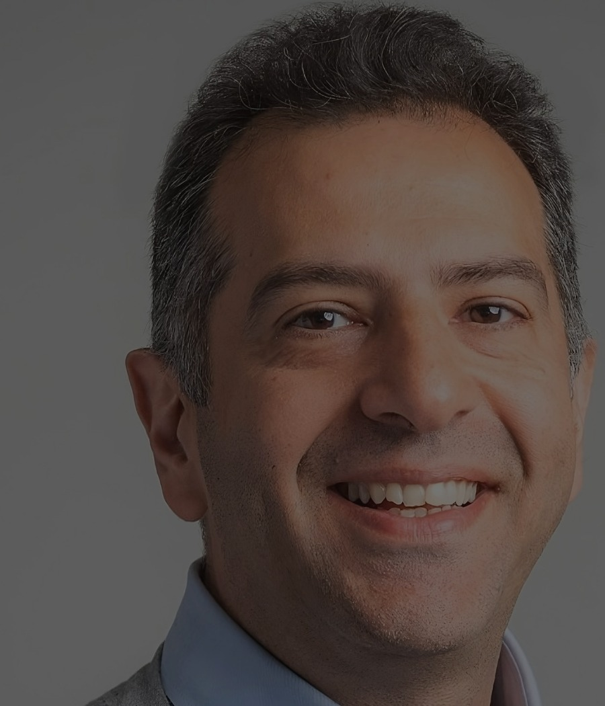
暗い照明全体を暗くした条件。総合 76.1 / 対称性 65.8%。
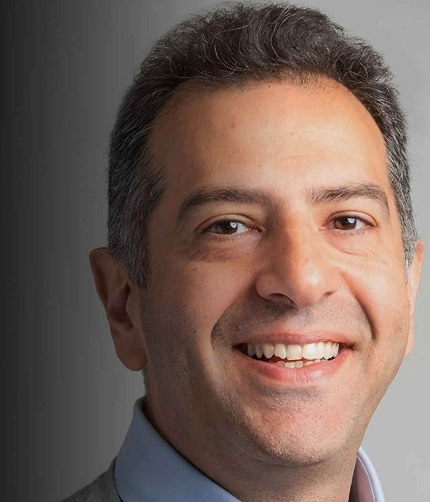
片側シャドウ左側へ強い影を足した条件。総合 79.3 / 対称性 70.4%。
背景を広く取り、顔サイズを小さくした条件。総合 76.6 / 対称性 66.6%。
| 条件 | 総合スコア | 対称性 | 笑顔 | 読み方 |
|---|---|---|---|---|
| クリアな基準写真 | 78.0 | 68.6% | 100.0% | 比較の出発点として使いやすい条件です。 |
| 暗い照明 | 76.1 | 65.8% | 100.0% | 明るさ低下だけでも対称性が少し落ちています。 |
| 片側シャドウ | 79.3 | 70.4% | 100.0% | 影の入り方次第で数値が良くも悪くも振れうる例です。 |
| 顔が小さい写真 | 76.6 | 66.6% | 100.0% | 情報量不足で境界が甘くなりやすい条件です。 |
基準画像は Unsplash のポートレート1枚を使い、当サイト側で明るさ、影、顔サイズを変えた派生画像を作成しています。目的は「誰かを順位づけすること」ではなく、Pillar 5の主張どおり写真条件だけで数値が動くことを透明に示すことです。
ライティング（光）が最もスコアに影響する理由
自撮りで最も結果を動かす要素は、ほぼ間違いなく光です。AIは顔の輪郭線、まぶたの境界、鼻翼、口角、顎先など、濃淡の差からランドマークを推定します。ところが光が硬すぎると、一部が飛び、一部が沈み、肌の質感も不自然に見えます。これにより左右対称性の推定が不安定になったり、目の下の影が必要以上に強調されたりします。人間なら「今日は照明が悪いだけ」と補正できますが、AIはその補正をしてくれません。
最も安定しやすいのは、窓から入るやわらかい自然光を顔の正面から受ける条件です。窓に対して正面、または少し斜めでも左右差が大きく出ない位置が理想です。室内の蛍光灯は上からの影が出やすく、LEDリングライトは正面から均一に当てやすい点で優秀ですが、近すぎると白飛びやテカリの原因になります。避けたいのは、真上からの照明、逆光、片側だけの強い照明です。真上の光は目の下と鼻下に影を作り、逆光は顔全体を暗いシルエットのようにします。片側照明は、片方の頬や輪郭を暗く沈め、シンメトリーの数値が本来以上に低く見える原因になります。
| 光の条件 | おすすめ度 | スコアへの影響の読み方 |
|---|---|---|
| 窓際の自然光 | ◎ 最優先 | やわらかく均一で、輪郭と目元の境界が安定しやすいです。 |
| リングライト | ○ 次善策 | 夜でも再現しやすく、窓光が使えない環境の基準作りに向きます。 |
| 天井の蛍光灯だけ | △ 注意 | 目の下、鼻下、口角に下向きの影が入りやすく、疲れて見えます。 |
| 逆光 | × 非推奨 | 顔が暗く沈み、ランドマーク精度と肌質の読み取りが大きく落ちます。 |
| 片側ライト | × 非推奨 | 人工的な左右差が入り、対称性スコアが顔そのもの以上にぶれます。 |
自然光の活かし方
窓から40cmから100cmほど離れ、顔全体に光が回る位置に立つのが基本です。曇りの日や午前のやわらかい光はとくに安定しやすく、強い直射日光よりも比較向きです。窓を真横にすると片側だけ明るくなりやすいので、最初は正面から受ける配置から始めると失敗が少なくなります。
リングライトの正しい使い方
リングライトは顔から50cm前後離し、目線から少し上の高さに置くのが安全です。真っ暗な部屋でリングライトだけを強く当てるより、部屋の補助光を少し足して背景との明暗差を和らげたほうが自然です。明るさは「盛る」ためではなく、輪郭と目元を読みやすくするために使います。
夜間撮影のコツ
夜はノイズと手ブレが増えやすいので、ライトを足すだけでなくスマホを固定することが大切です。正面にやわらかい光源を置き、背景の窓や強い点光源を避け、必要なら壁に向けた反射光を使うと顔の片側だけが沈みにくくなります。夜の自撮りは「明るくする」より「影を減らす」が優先です。
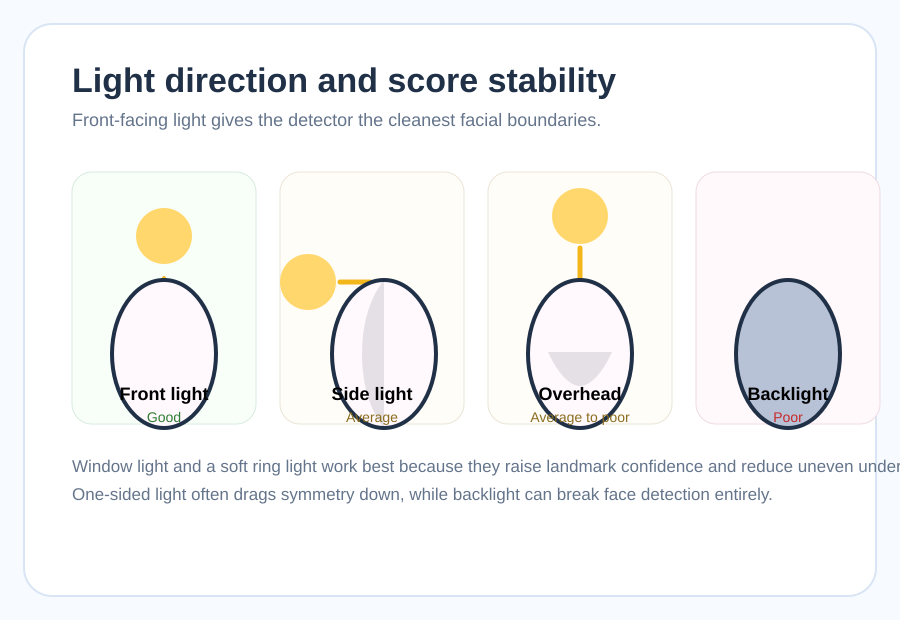
広い窓から入る拡散光は、顔全体を均一に照らしやすく、肌のムラと強い影を作りにくいのが利点です。
窓がない場合は、正面寄りのライトを1つ、必要なら弱い補助光を足して、左右差を減らすのが基本です。
はい。むしろ肌の明暗差がつぶれないよう、顔の情報を均一に見せる光づくりが特に大切になります。
ライティングを改善して再診断
窓際に移動した1枚、リングライトを正面に置いた1枚、上からの照明だけで撮った1枚を比べると、光の差がどれだけ結果に表れるかが分かります。
ライティング改善後の写真を診断
前向きのやわらかい光で試すのがおすすめ
光の条件を含めて解析中...
目元と輪郭の読みやすさを確認しています
総合判定
年齢
性別
感情
シンメトリー
笑顔
カメラ角度・距離・高さの最適設定
AI顔診断のモデルは、正面に近い顔写真を最も安定して読めるよう学習されていることが多く、10度から15度程度でも読み取りやすさが落ちる場合があります。これは顔そのものが変わるからではなく、ランドマークを置く基準点が片側に寄って見えるからです。自撮りでよくある「少し下から見上げる角度」は、鼻が前に出て、顎下の余白が増え、フェイスラインが広がって見えやすくなります。逆に高すぎる俯瞰は額と目を強調し、下顔面を縮めます。
おすすめは、カメラを鼻筋から目線の高さに置き、顔から40cmから60cm程度離し、顔をほぼ正面に向ける設定です。スマホを腕で持つと距離が足りず、通常広角レンズの歪みが入りやすいので、セルフタイマー、スマホスタンド、三脚を使えるなら一気に改善します。距離が離れると鼻先だけが強調されにくくなり、目、鼻、口、顎の比率が自然に戻りやすくなります。撮影後にトリミングするほうが、最初から顔に近づけるよりずっと安定します。
高さについては、「ほんの少しだけ上」よりも「ほぼ水平」がより安全です。高すぎると別人級に印象が変わるため、盛りすぎず、ただ下から見上げるのを避ける程度で十分です。首の角度も影響します。顎を軽く前に出して少し引くと、下顔面のラインが整理され、二重顎の見え方も抑えられます。ここでも目的は高得点の演出ではなく、輪郭点が素直に読める姿勢を作ることです。
スマホのグリッド線を使った正確な正面撮影方法
iPhone でも Android でも、カメラ設定でグリッド線を表示しておくと、地味ですが強力です。目の高さを横線に合わせ、鼻筋を中央線に置き、肩が水平かを確認するだけで、左右の傾きをかなり減らせます。撮る前に一度だけ水平を合わせるより、毎回グリッドを見ながら位置を再現するほうが比較写真の精度は上がります。
スマホのインカメラ vs アウトカメラ どちらが良い？
基本はアウトカメラです。インカメラは便利ですが、画質や歪み補正、センサー性能で不利なことが多く、顔の細かな境界が甘くなりやすいです。アウトカメラでセルフ撮影するには少し手間がかかるものの、Pillar 5全体の考え方でいえば「毎回安定して同じ条件を作れる」ほうが価値があります。特に同じ場所で何度も再診断したい人ほど、アウトカメラ+スタンドの恩恵は大きいです。
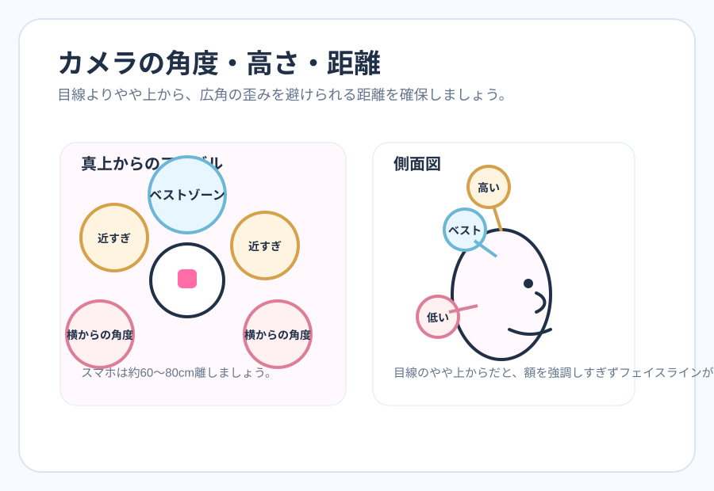
| 条件 | 安定しやすい設定 | ぶれやすい設定 |
|---|---|---|
| 角度 | 正面からほぼ水平 | 見上げ、見下ろし、斜め45度 |
| 距離 | 40cmから60cm前後 | 顔に近すぎる自撮り |
| カメラ | アウトカメ+タイマー | 近距離のインカメ固定 |
| 左右の傾き | グリッド線で水平確認 | 5度から10度の傾き放置 |
| 姿勢 | 顎を軽く引く、顔をまっすぐ | 首をすくめる、横向き |
角度を変えて試す
正面寄りの写真と、少し下からの自撮りを比べるだけでも傾向が見えます。距離と高さを直した1枚でどれだけ安定するかを確認してみてください。
角度改善後の写真をアップロード
顔から少し距離を取った写真が比較しやすいです
角度と距離を反映して解析中...
レンズ歪みの少ない条件かを確認しています
総合判定
年齢
性別
感情
シンメトリー
笑顔
表情・笑顔の作り方でスコアが変わる
表情は、Pillar 3の「笑顔と魅力の科学」と直結する要素です。同じ顔立ちでも、自然な笑顔の写真は無表情より魅力的に評価されやすく、AIの笑顔強度スコアも上がりやすくなります。ただし、ここでいう笑顔は大きく歯を見せることとイコールではありません。むしろ、口元だけを作った笑顔は不自然さが出やすく、目元の筋肉が動かないため、人間にもAIにもぎこちなく見えることがあります。
自然な笑顔のコツは、口角だけでなく目の周辺も少し柔らかくすることです。いわゆるデュシェンヌスマイルに近い状態では、頬が少し上がり、目元が自然に細まり、親しみやすい印象になります。とはいえ、目が細くなりすぎるとランドマークの読み取りが逆に難しくなることもあるため、AI顔診断用の基準写真では「穏やかに閉じた笑顔」か「軽く口角を上げた自然表情」が最も安定しやすいです。大きく口を開けた笑顔は、魅力の文脈では強い武器でも、唇の輪郭や歯の露出で比較が難しくなる場合があります。
眉の力みも見落としがちな要素です。緊張して眉間にしわが寄ると、怒りや困惑として分類されやすくなり、全体印象にも影響します。鏡の前で練習するなら、「3秒だけ楽しい記憶を思い出してからシャッターを切る」「歯を見せすぎずに口角だけ軽く上げる」「眉を上げず、目元をやわらかく保つ」の3点だけで十分です。表情は演技ではなく、緊張を一段抜く作業と考えると再現しやすくなります。
真顔で診断したい人もいます。その場合は「無表情」より「ニュートラル表情」を意識すると良いです。顎に力を入れず、眉間を寄せず、目を見開きすぎない状態なら、ベースライン比較として十分使えます。つまり笑顔は常に正義ではなく、何を比較したいかで最適解が変わります。
緊張した顔はスコアを下げる？
下げることがあります。真顔そのものが悪いのではなく、顎に力が入る、眉間が寄る、口角が下がる、顔が強張ることで、写真全体の印象が硬く見えやすくなるからです。比較用の1枚を撮るときは、連写気味に5枚撮って、いちばん力が抜けている1枚を選ぶのが現実的です。
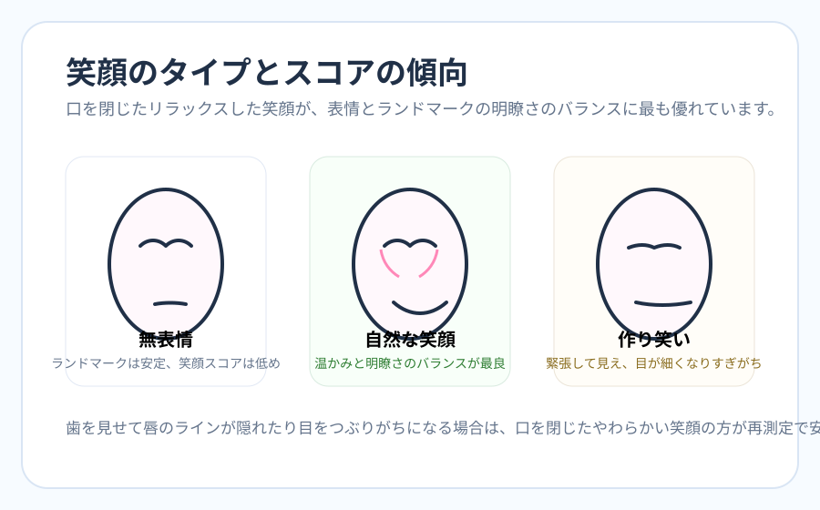
大きく笑おうとせず、口角を1段だけ持ち上げる感覚から始めます。
眉を上げず、目の周辺を柔らかくすると、作った表情より自然に見えます。
肩と顎の力が抜け、緊張顔になりにくくなります。
- 目を見開きすぎず、眠そうにも見えない自然な開き方にする
- 歯を見せすぎず、口角だけ軽く上げる
- 眉間にしわが寄っていないか確認する
- 基準写真を作るなら真顔版と微笑み版を両方撮って比較する
笑顔の研究背景は 笑顔と魅力の科学、実際に笑顔スコアを見たい場合は 笑顔スコアを詳しく見る ページも合わせて読むとつながりやすいです。
背景・環境がAI検出に与える影響
背景は一見地味ですが、AI顔検出ではかなり重要です。背景がごちゃついていると、顔の外周が曖昧になったり、別の顔らしいパターンを誤検出したりすることがあります。特に複数人が写る背景や、テレビ画面、ポスター、強い模様の壁紙は避けたい条件です。背景が整うだけで、顔の位置決めが安定し、その後のランドマークもブレにくくなります。
もっとも無難なのは、無地の明るい壁です。ただし白すぎる背景は、明るい肌色と溶けて輪郭が薄く見えることがあるため、薄いグレー、ベージュ、淡いブルーのような中立色が使いやすいです。屋外なら、空や緑のように単純な背景は悪くありません。一方で、道路標識、人混み、店内照明など情報量の多い背景は、顔より背景のコントラストが勝ちやすくなります。
また、背景だけでなく環境も重要です。夜に窓ガラスが写り込む、鏡越しで別の顔が見える、動きのある場所でブレるなど、検出エラーの原因は意外と多いです。比較の精度を上げたいなら、背景は固定したほうがいいです。毎回違う部屋、違う時間帯、違う壁色では、何がスコア差の原因か切り分けにくくなります。背景選びは映えるかどうかより、「顔と背景がきちんと分かれるか」で判断すると失敗が減ります。
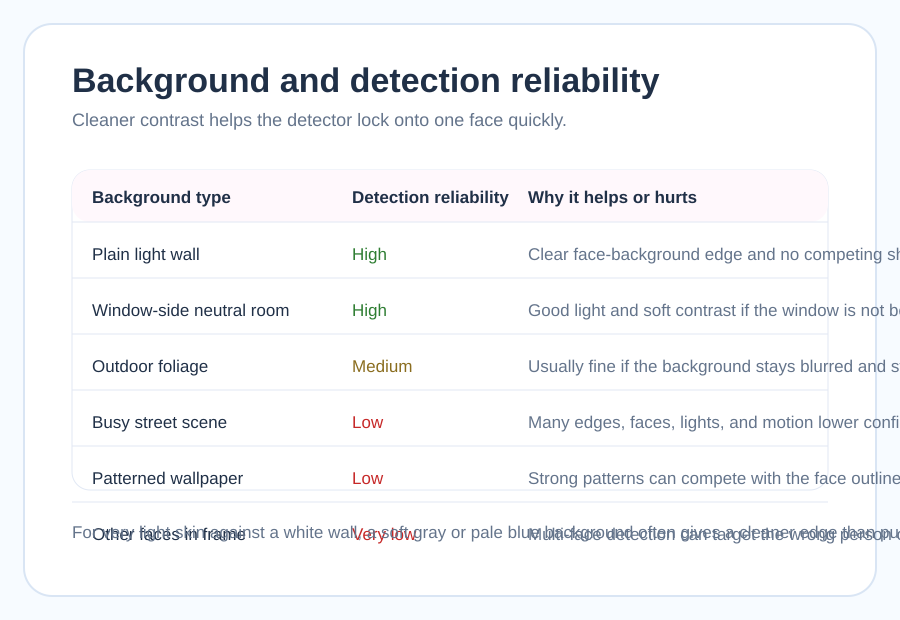
| 背景タイプ | 診断しやすさ | 理由 |
|---|---|---|
| 無地の壁 | 高い | 顔の外周が分離しやすく、検出ボックスが安定します。 |
| 薄いグレーや淡色背景 | 高い | 肌とのコントラストを保ちやすく、白飛びもしにくいです。 |
| 屋外の空や緑 | 中程度 | 良い条件も多いですが、時間帯と逆光に注意が必要です。 |
| 模様の多い壁紙 | 低い | 顔の境界と競合して、検出精度を下げることがあります。 |
| 複数人の背景 | 低い | 別の顔を拾う、人物境界がぶれるなどのエラー要因になります。 |
- 無地の壁
- 淡いグレーやベージュ
- 人が写らない屋外の空や緑
- 顔より明るすぎない背景
- 人混みや複数人
- 窓を背にした逆光
- 強い柄の壁紙
- 鏡やテレビの映り込み
解像度・画質・ファイル形式の最適化
画質は「読みやすさの土台」です。どれだけ良い光や角度で撮っても、ブレていたり、顔が小さすぎたり、スクリーンショットで荒れていたりすると、目、鼻、口、輪郭の境界が丸ごと甘くなります。最低ラインとしては顔領域が200px四方以上、実用ラインとしては500px前後ある状態が望ましく、できれば顔が画面の40%から50%を占める写真が安定します。全身写真や集合写真から切り出した顔は、本人比較には向きません。
ファイル形式はJPEG、PNG、WEBPのいずれでも構いませんが、圧縮の強いJPEGは肌のディテールやエッジがつぶれやすいことがあります。元画像が残っているなら、それを使うのが最善です。スクリーンショットは便利ですが、すでに一度圧縮されていることが多く、細かな特徴点には不利です。また、スマホのストレージ節約モードやSNS保存画像は、見た目以上に圧縮が強いことがあります。
ブレ対策としては、タップで撮るよりもタイマーや音量ボタンを使うほうが安定します。暗所で手持ち撮影をするとシャッタースピードが落ち、微妙な手ブレでも輪郭がにじみます。つまり画質は、解像度の数字だけでなく、光と撮り方の影響を受ける複合要素だと考えるべきです。
- 顔が画面の40%から50%以上を占めている
- 目元と輪郭にピントが合っている
- スクリーンショットではなくオリジナル画像を使う
- 過度なHDRやノイズ除去がかかっていない
- JPEG、PNG、WEBPのいずれかで保存されている
- ストレージ節約モードやSNS再保存画像を避ける
フィルター・加工の影響を理解する
フィルターと加工は、Pillar 5で最も誤解が起きやすいテーマです。結論から言うと、「少し明るさを整える」ことと「顔の比率を変える」ことは全く別です。前者は暗い写真を読みやすくする補助になりえますが、後者はAIが測るべき形そのものを動かしてしまいます。美肌フィルターも一見無害に見えますが、強すぎると頬骨や鼻翼の境界が平坦になり、かえって読みづらくなる場合があります。
特に避けたいのは、輪郭補正、顔やせフィルター、目の拡大、鼻筋補正のような形状変化です。これは人間の目にも盛れて見えることがありますが、AI顔診断では比較の意味を壊します。対称性や比率を見るはずのツールに、すでに形を変えた画像を入れると、結果は写真条件の改善ではなく加工の結果になってしまいます。これは「高スコアが出た」とは言えても、「正確に測れた」とは言えません。
一方で、軽い明るさ補正、軽いコントラスト調整、背景の色かぶり補正のように、顔の形を変えない処理なら比較用途でも許容しやすい場合があります。大切なのは「AIが見る形を変えたかどうか」です。公開用の盛れ写真と、比較用の基準写真は分けて考えると迷いにくくなります。
Instagram と TikTok のフィルターは使っていい？
判断基準はアプリ名ではなく機能です。明るさ、色温度、彩度を少し整えるだけならまだ比較の余地がありますが、小顔補正、目の拡大、鼻筋強調、肌の極端な平滑化が入る時点で、顔診断用としては非推奨です。SNS側で自動的に顔補正が入る端末もあるので、基準写真を撮るときは美容補正やビューティーモードをオフにしておくと安全です。
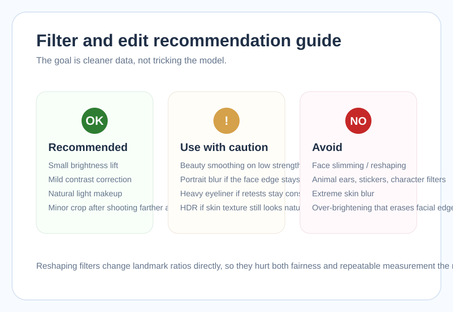
| フィルター / 加工 | 推奨度 | 理由 |
|---|---|---|
| 軽い明るさ補正 | ✅ OK | 暗い写真を読みやすくする補助になりやすいです。 |
| 軽い色温度補正 | ⚠️ 注意 | やりすぎると肌の質感や影の印象が変わります。 |
| 美肌スムージング弱 | ⚠️ 注意 | 弱めなら許容範囲ですが、境界を平坦にしすぎると逆効果です。 |
| 顔やせ・輪郭補正 | ❌ 非推奨 | 比率そのものが変わるため、比較用途の意味が崩れます。 |
| 目の拡大や鼻筋補正 | ❌ 非推奨 | AIが見る位置関係を直接動かしてしまいます。 |
フィルター別の細かな話は フィルター別影響の詳細 で深掘りしています。AIスコアの揺れを「加工のせいかも」と切り分けたいときにも役立ちます。
アクセサリー・メガネ・髪型の影響
メガネ、帽子、前髪、マスクのように顔の一部を隠す要素は、写真の印象以上にAI診断へ影響します。とくに目元は、感情推定にも左右対称性にも関わる重要な領域なので、太いフレームやレンズ反射が入ると結果が大きくぶれやすくなります。遊びで試すのは構いませんが、基準写真を作るときは外すのが安全です。
前髪も見落とされがちです。眉や目尻に髪がかかると、顔上部の比率と目元ランドマークが不安定になります。片頬に髪が強くかかっていると、顔幅まで狭く見えることがあります。大ぶりのイヤリングやサイドに広がるヘアアクセサリーも、輪郭近くに大きなコントラストを作るため、比較用途ではシンプルな状態のほうが無難です。
つまり、アクセサリーは「おしゃれかどうか」ではなく「どの特徴点を隠すか」で判断すると分かりやすくなります。診断用の1枚はなるべく素の条件に寄せ、公開用やプロフィール用の1枚は好みで仕上げる。この2枚を分けて考えるだけで、スコアの解釈はかなり楽になります。
- メガネは外せるなら外す。使うなら反射の少ない状態にする
- 帽子、サングラス、マスクは比較用途では外す
- 前髪は眉と目尻が見えるように分けるか留める
- 大きなイヤリングやフェイスラインにかかる髪は控えめにする
メイクと顔診断スコアの関係
メイクはフィルターと違って顔に直接触れる演出なので、扱いを分けて考える必要があります。軽いベースメイク、眉の整え、薄いコンシーラー、ナチュラルなチーク程度なら、肌の均一感や眉の輪郭が整ってAIにとっても読みやすい条件になることがあります。とくに眉と目元のコントラストが少し上がるだけで、顔全体の印象が安定して見えるケースは珍しくありません。
一方で、重いシェーディング、極端な涙袋強調、太いアイライン、輪郭を作り替えるコントゥアは、目元やフェイスラインの本来の境界をずらします。この場合、上がった数値は「本来の顔が高く出た」というより「そのメイクがこのモデルに合った」結果です。だからノーメイク、ナチュラルメイク、フルメイクを比べるときは、同じ光、同じ距離、同じ背景、同じ笑顔でA/B比較するのが正攻法になります。
基準写真として最も誠実なのはノーメイクか軽いメイク、ベストコンディション写真として最も高く出やすいのはナチュラルメイク、作品寄りになりやすいのがフルメイクです。この違いを理解しておくと、数字に振り回されずに使い分けられます。美容による改善を知りたい人は、Pillar 6 の メイク・美容での改善 も次の導線になります。
どれが正しい顔かを決めるのではなく、どの状態がこのモデルで最も安定して読まれるかを見るのがコツです。比較写真では条件を固定し、変数をメイクだけにしてください。
メイクと顔診断スコアの関係 では、ノーメイク、軽いメイク、フルメイクの比較の考え方をさらに詳しく整理しています。
プロ写真 vs スマホ自撮り — スコアはどう変わる？
プロ写真は、スタジオ照明、焦点距離の長いポートレートレンズ、姿勢指示、場合によってはレタッチまで含めて、非常に条件が整っています。そのため「最高スコア」を狙うなら有利に見えることが多いです。一方で、あなたが日常的に使うのはスマホ自撮りや日常写真であることが多く、プロフィール比較や再現性という意味では、自然光のスマホ写真のほうが実務的に価値がある場合もあります。
ここで大切なのは、目的をはっきりさせることです。もし「今ある候補写真の中でどれが使いやすいか」を見たいなら、スマホ自撮り同士を同条件で比較すべきです。もし「最も条件の良い写真で自分がどう読まれるか」を知りたいなら、プロ写真も価値があります。ただし重いレタッチが入っている場合は、本人比較というより作品比較になってしまうので、その点は分けて考えたほうが健全です。
最強のスマホセットアップは、アウトカメラ、タイマー、窓際の自然光かリングライト、無地背景、少し上からの正面構図です。これだけで多くの人は、手持ちインカメの近距離自撮りよりかなり安定した結果を得られます。つまり、スマホだから不利なのではなく、スマホをどう置き、どう光を作るかが勝負です。
証明写真はスコアが高い？
証明写真は正面性と背景の安定感では有利ですが、表情が硬く、照明も必ずしもやわらかくないため、総合的に常に高いとは限りません。比較用の基準としては優秀ですが、魅力印象まで含めて見るなら自然な笑顔写真も必要です。
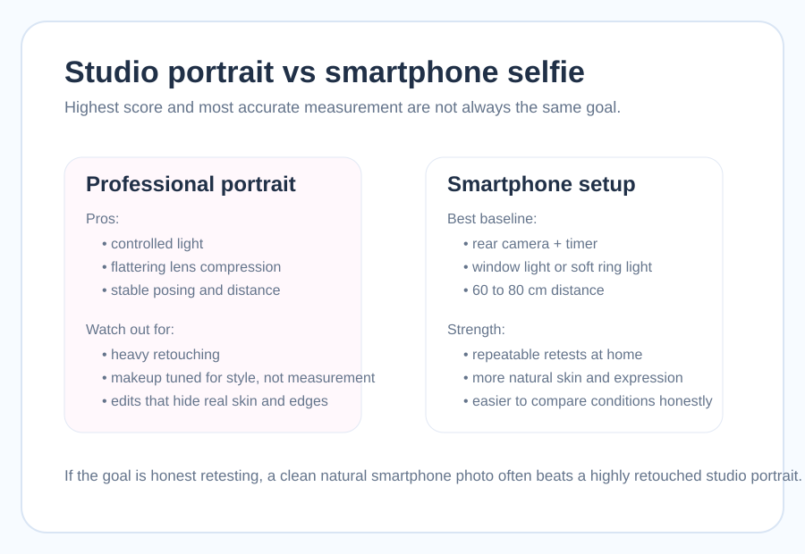
NG写真チェックリスト — 避けるべき15のパターン
ここはPillar 5の中でも、保存・共有されやすい実践セクションです。良い写真を撮る前に、まず失敗パターンを外すほうが早いからです。NG写真は「顔が悪く見える写真」ではなく、「AIが正確に読みにくい写真」です。この言い換えが大切です。ユーザーが自分を責める方向ではなく、入力条件を改善する方向へ視線を向けやすくなります。
- 正面向き・目線カメラ
- 自然光 or リングライト（正面）
- 無地の背景（明るい壁）
- 自然な笑顔または穏やかな表情
- 顔がフレームの50%以上
- 高解像度・ピントが合っている
- 髪が顔にかかっていない
- 眼鏡・帽子・マスクなし、または反射が少ない
- 横顔・斜め45度以上
- 逆光・真上からの照明
- 複数人・込み入った背景
- 怒り・困惑などの強い感情表現
- 顔が小さすぎる全身写真
- ブレ・ぼかし加工・低解像度
- 前髪・帽子で顔が隠れている
- 顔変形・スリムフィルター使用
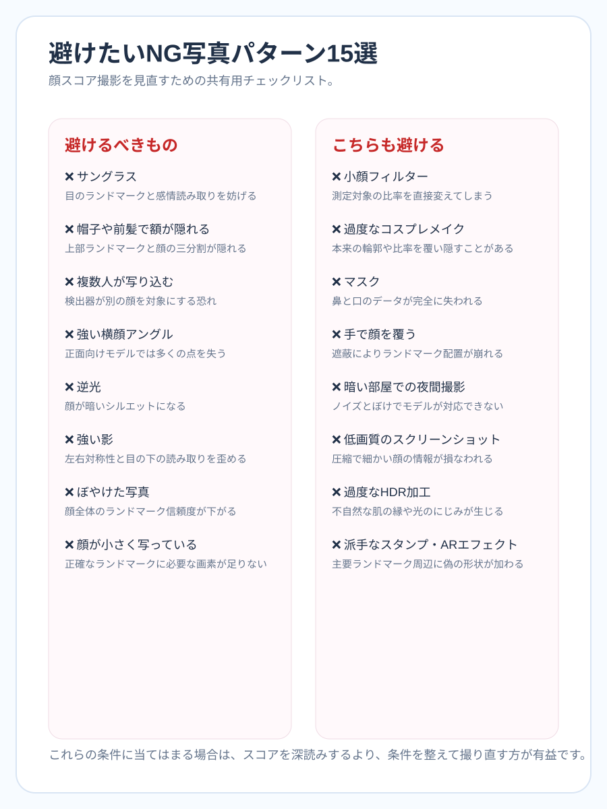
目元ランドマークがほぼ読めなくなります。
顔の上部比率が不安定になります。
別の顔へフォーカスが移ることがあります。
正面前提のモデルでは読み取り精度が大きく落ちます。
顔全体が暗く沈み、特徴点が見えません。
片側だけ暗くなると左右差が誇張されます。
すべてのパーツ境界が甘くなります。
ランドマークを置く情報量が足りません。
比率比較が成立しなくなります。
本来の目元・輪郭が別物として読まれます。
口元と顎の情報が欠落します。
輪郭や頬のラインが欠けます。
ノイズとブレが増えやすくなります。
再圧縮で細部が失われます。
肌や影が不自然になり、質感比較が難しくなります。
チェックリストをクリアしたら診断
ここまでのNG項目を外し、光、角度、背景、髪の条件を整えた1枚でどれだけ結果が落ち着くかを確認するタイミングです。最初の写真との差を見るのがPillar 5のいちばん賢い使い方です。
改善後の再挑戦写真を診断
顔が大きく、背景が静かな写真がおすすめ
改善後の条件を解析中...
NG要素が減った写真かを確認しています
総合判定
年齢
性別
感情
シンメトリー
笑顔
完璧な診断写真チェックリスト【印刷保存版】
ここまでの内容を、撮影前にそのまま確認できる10項目へ圧縮したのがこのチェックリストです。Pillar 5で最も伝えたいのは、「高い数字だけを取りに行く」のではなく、「毎回同じ条件で比較できる写真の型を作る」ことです。その型ができれば、プロフィール写真選びでも、メイク比較でも、髪型比較でも、AI顔診断を意味のある道具として使い回せます。
使い方はシンプルです。撮る前に10項目を見て、撮ったあとにもう一度見直すだけです。たまたま盛れた1枚ではなく、同じ部屋、同じ光、同じ距離でいつでも近い写真を作れることが、Pillar 5の本当のゴールです。スクリーンショット保存、LINE送信、家族や友人との共有用にも使いやすいよう、短い文で整理しています。
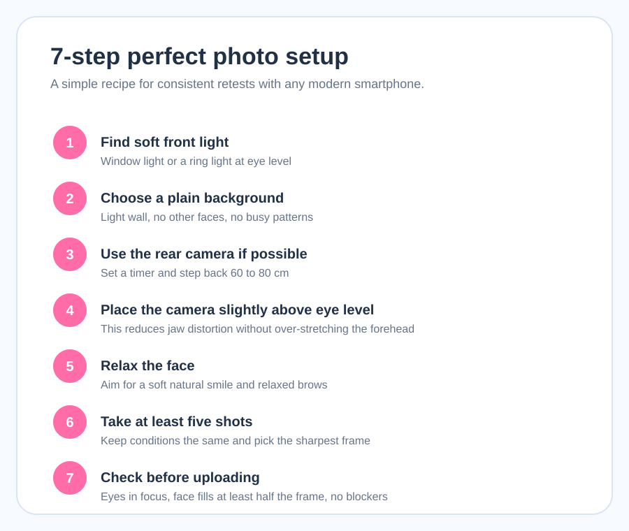
難しければリングライトを正面に置きます。
鼻筋から目線の高さが基準です。
スマホのグリッド線で左右の傾きを確認します。
眉と目尻が見える状態にします。
緊張顔より、軽く力が抜けた表情が安定します。
人、鏡、強い柄、逆光は避けます。
近距離広角の歪みを減らします。
基準写真は美容補正オフが基本です。
目元と輪郭が甘い写真は使いません。
スクリーンショットではなく元画像を使います。
このページでいう「上げる」は、条件を整えてAIが本来の情報を読み取りやすくする意味です。加工でごまかすことでも、他人と競うことでもありません。正確な比較ができる写真を作ることが、長期的にはもっとも役立ちます。
最高の写真でスコアを確認
光、角度、背景、表情、画質、フィルター条件まで整えたら、最後に1枚アップロードして総合比較します。ここで最初の基準写真と見比べると、何が効いたかがはっきり見えます。
完成したベスト写真を診断
Pillar 5の最終チェック用アップロード
最終セットアップを解析中...
基準写真との比較に使える1枚かを確認しています
総合判定
年齢
性別
感情
シンメトリー
笑顔
よくある質問（FAQ）
自撮りと他撮りはどちらが顔診断に向いている？
再現性を重視するなら自撮り、最高条件を1枚だけ知りたいなら他撮りも有効です。比較用の基準写真を作るなら、自分で光と角度を固定しやすい自撮りのほうが原因を切り分けやすくなります。
古い写真でも使える？
使えますが、数年前の写真はカメラ性能、圧縮、当時のフィルター、今の見た目とのズレが混ざります。今の自分の基準を知りたいなら、同じ日に同じ条件で撮った新しい写真を優先したほうが比較には向いています。
正面じゃないとダメ？
完全な証明写真である必要はありませんが、正面に近いほど結果は安定します。斜め45度や強い見上げ・見下ろしでは、左右対称性や比率の計算が実際より崩れて見えやすく、比較用途には不向きです。
フロントカメラとリアカメラはどちらが良い？
一般にはリアカメラのほうが有利です。解像度、歪み補正、センサー性能が安定しやすく、セルフタイマーやスタンドと組み合わせれば比較写真をより再現性高く撮れます。
明るすぎる写真はNG？
暗すぎる写真と同じくらい、白飛びした明るすぎる写真も危険です。額や頬、鼻筋が飛ぶとランドマークの境界が消え、肌質や左右差も読み取りにくくなります。自然光でもレースカーテン越しの拡散光が安全です。
サングラス姿で試すとどうなる？
目元ランドマークがほぼ隠れるため、笑顔判定や左右差の読み取りは大きく不安定になります。遊びで試すのは構いませんが、基準写真や比較用写真としては非推奨です。
毎回スコアが違うのはなぜ？
顔そのものより、光、角度、距離、背景、表情、圧縮率の違いで結果が動くからです。単発の数字を見るより、条件を1つずつ変えて何が効いたかを確認するほうが、Pillar 5の使い方としては正確です。
何枚試してもいい？
はい。むしろこのピラーでは、同じ条件で複数枚を試し、ライティングや角度を少しずつ変えながら比較する使い方を推奨します。大切なのは高い1枚を探すことではなく、再現できる良い条件を見つけることです。
関連サポートページ
窓光、リングライト、室内灯の作り方をライティングだけに絞って深掘りします。
顔診断の最適な撮影角度ガイドカメラ高さ、距離、レンズ歪み、グリッド線の使い方を詳しく整理します。
自撮り vs 他撮り スコア比較スマホ自撮りとスタジオ・他撮りのどちらが比較用途に向くかをケース別に整理します。
フィルター・加工と顔診断精度どの加工が比較を壊しやすいか、どこまでが許容範囲かを1ページで確認できます。
スマホカメラ設定ガイド（顔診断向け）アウトカメ、タイマー、解像度、補正オフなど、基準写真向けのスマホ設定をまとめています。
表情トレーニングで笑顔スコアを上げる力みを減らし、写真でも不自然になりにくい笑顔練習法をまとめています。
背景選びで顔診断精度を上げる背景色、情報量、複数人写りのリスクを背景だけに絞って解説します。
メイク別 顔スコア変化シミュレーションノーメイク、軽いメイク、フルメイクの比較の考え方をまとめています。
まとめ：最高の診断写真で本当のスコアを知ろう
自撮り・顔写真の最適化で最も大切なのは、光、角度、表情、背景、画質、フィルター、アクセサリー、メイクの8要素を順番に整えることです。とくにライティングとカメラ角度は、顔そのもの以上にスコアの見え方を動かします。だからPillar 5では、見た目を無理に変える方法ではなく、AIが読み取りやすい入力を作る方法を中心にまとめました。
このガイドの目的は、高い数字を作ることより、比較に使える写真の型を作ることです。最初の基準写真、光を直した写真、角度を直した写真、チェックリストを通した写真、最後の完成写真という順で再診断していけば、どの改善が効いたかを自分で確認できます。ツールに戻るなら AI診断ツールを試す、美容面の改善を進めるなら メイク・美容での改善、笑顔を深掘りするなら 笑顔スコアを詳しく見る、結果の揺れを理解するなら AIスコアの精度について も続けて読めます。

このページは、顔スコアAIの写真条件レビュー担当が、ブラウザ内AIツールの挙動、顔ランドマークの読み取り安定性、スマホ撮影で再現しやすい条件を基準に編集しています。心理学と写真表現の交点は 顔の美しさの科学 ハブでも補足しています。